8/1 ビデオインアメリカ尼崎店のニュータイプチャレンジ 2026 MISSION4（8月開催）で6位に入った赤/紫デッキです。5弾（GD05）が大会で使えるようになった8/1から11/2までの赤/紫の入賞デッキ204本では、ガンダム・バルバトスアダプトを74.5%、三日月・オーガスを71.1%が入れていますが、このデッキは〔鉄華団〕のカードを1枚も入れず、〔CB〕のカード15種45枚で組んでいます。赤/紫での採用率が10%未満のカードは16種44枚です。
デッキリスト
大会ページ: ビデオインアメリカ尼崎店 8/1。
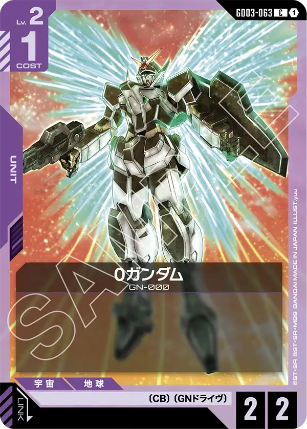
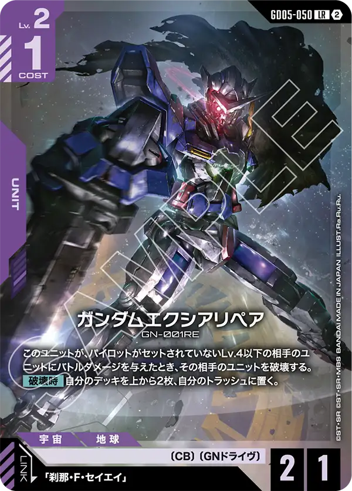
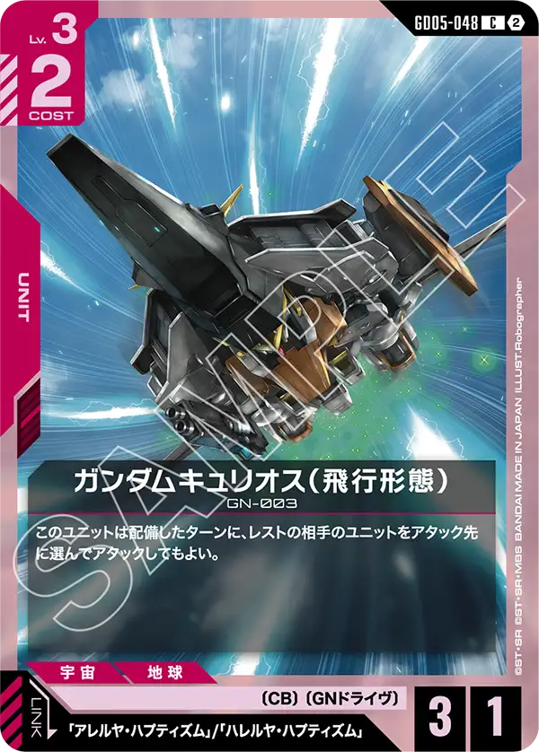
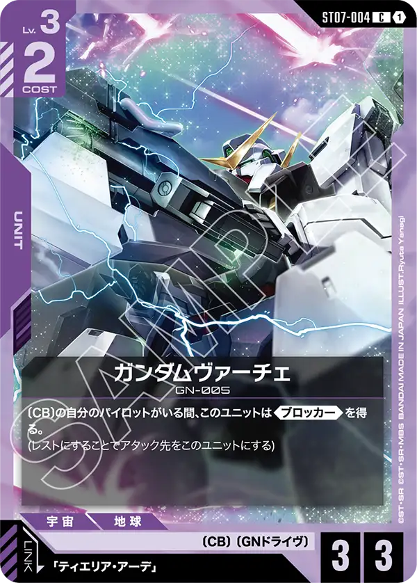
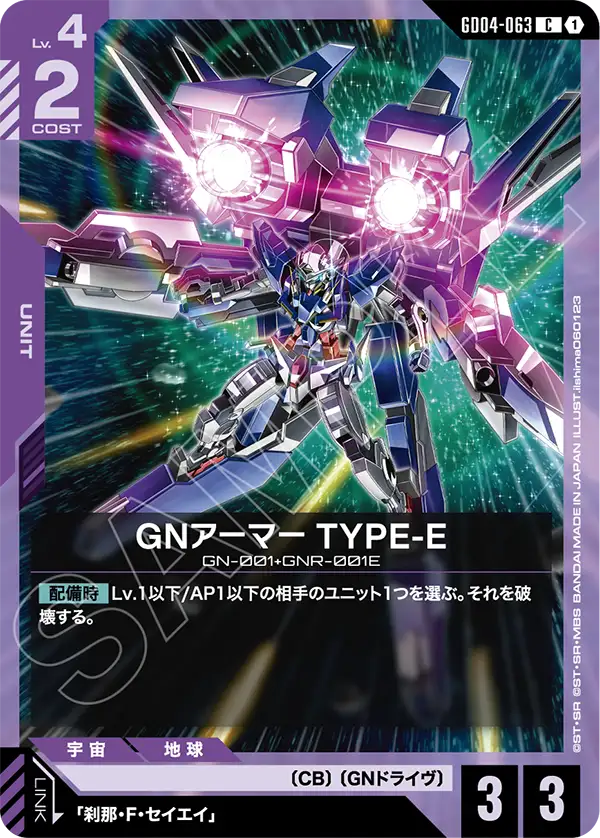
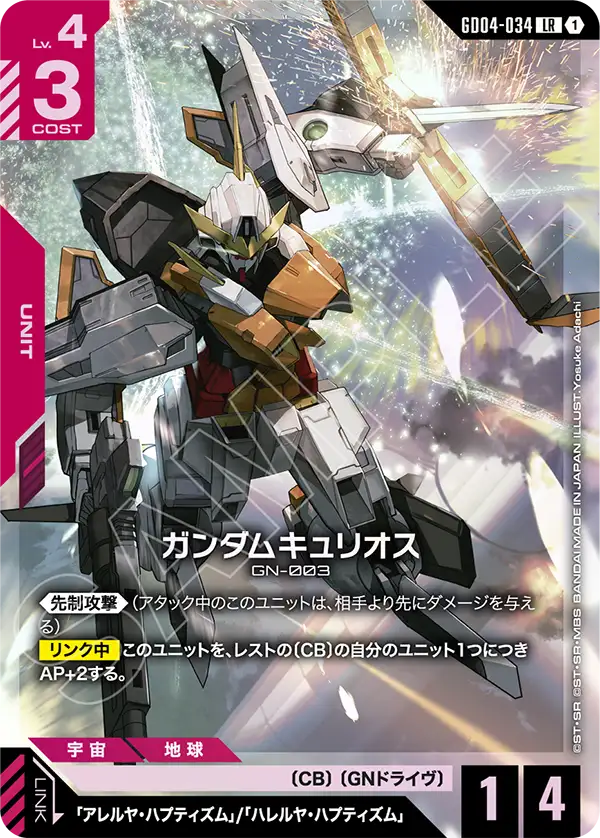
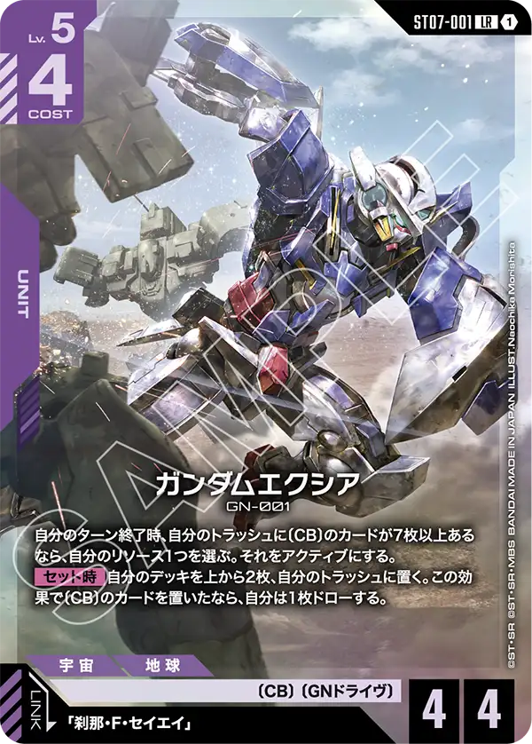
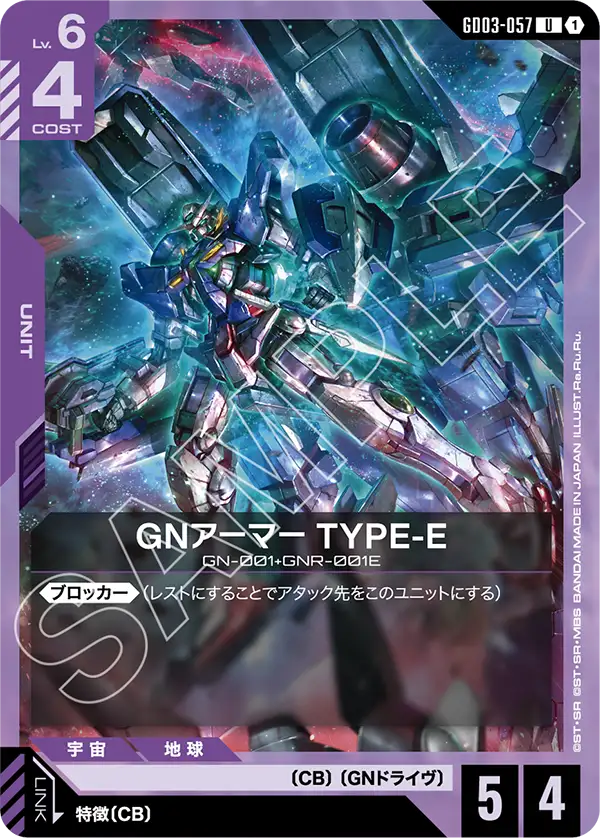
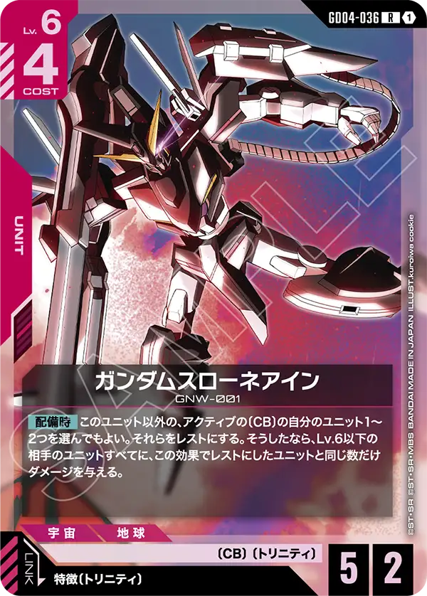
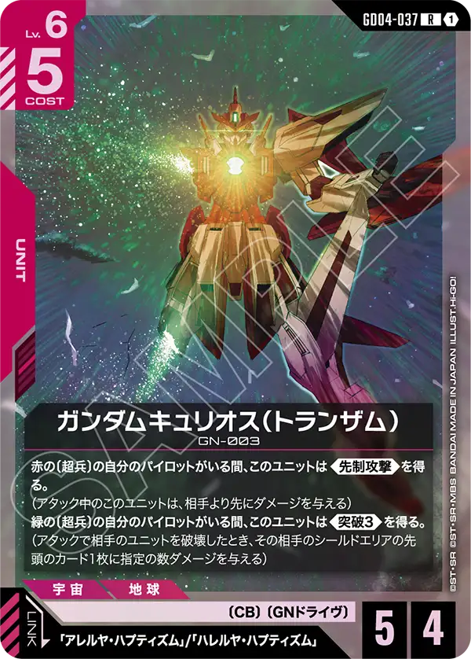
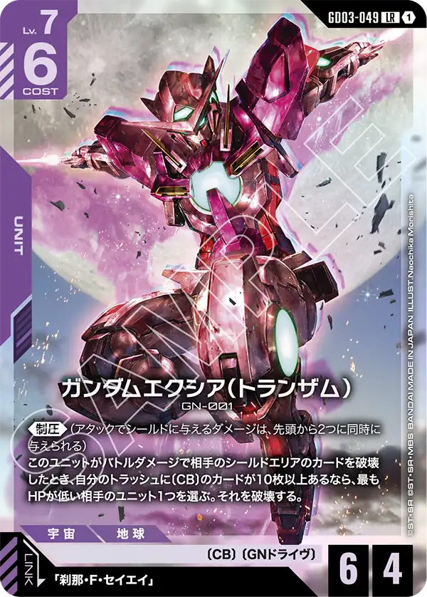
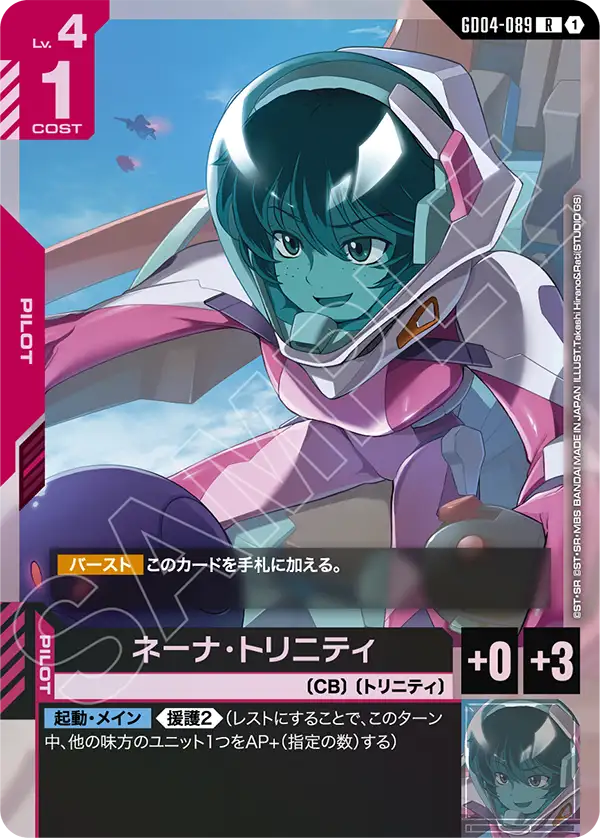
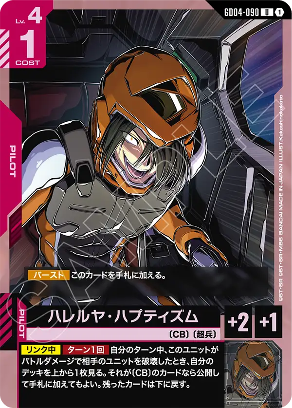
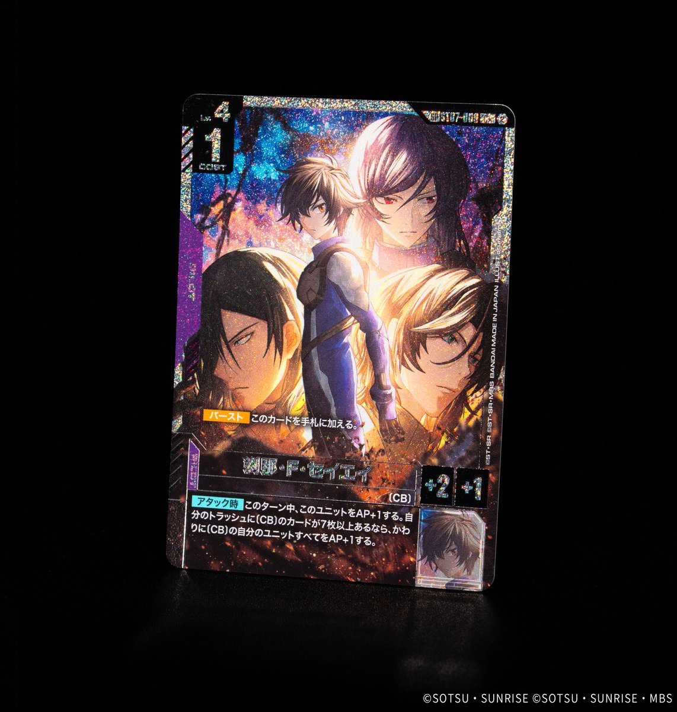

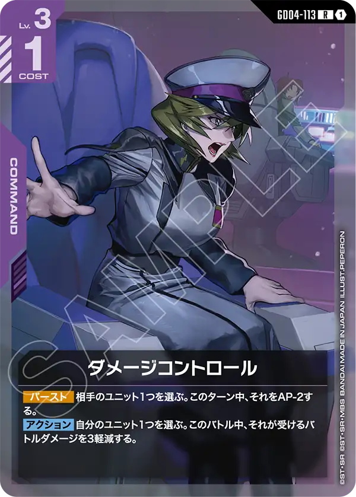
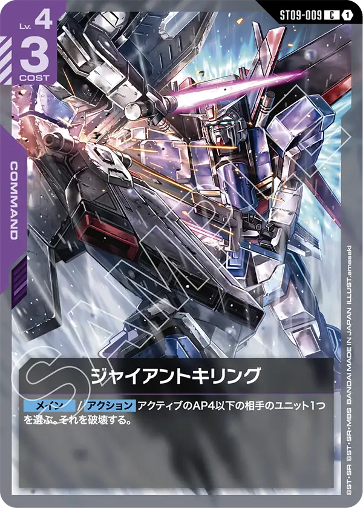
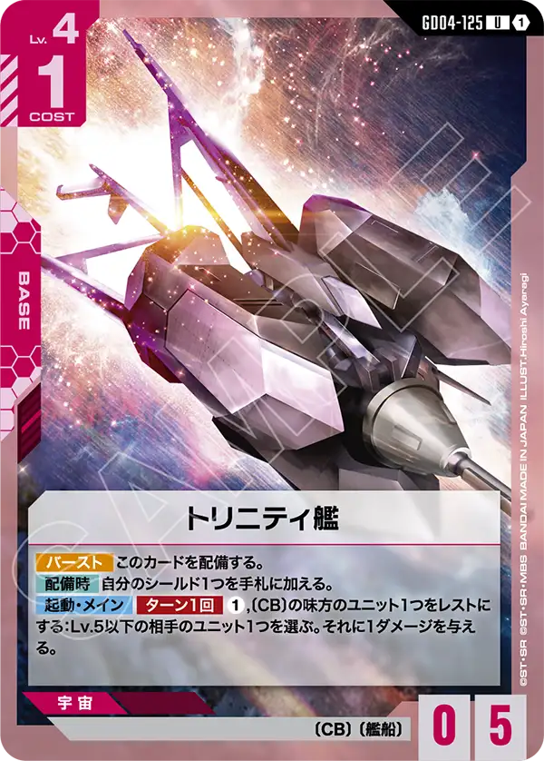
| カード | 種類 | 色 | Lv | コスト | AP/HP | 枚数 | 赤/紫での採用率 |
|---|---|---|---|---|---|---|---|
| GD03-063 0ガンダム 珍 | ユニット | 紫 | 2 | 1 | 2/2 | 4 | 9.3% (19) |
| GD05-050 ガンダムエクシアリペア | ユニット | 紫 | 2 | 1 | 2/1 | 4 | 59.3% (121) |
| GD05-048 ガンダムキュリオス（飛行形態） 珍 | ユニット | 赤 | 3 | 2 | 3/1 | 2 | 2.0% (4) |
| ST07-004 ガンダムヴァーチェ 珍 | ユニット | 紫 | 3 | 2 | 3/3 | 4 | 2.9% (6) |
| GD04-063 GNアーマー TYPE-E 珍 | ユニット | 紫 | 4 | 2 | 3/3 | 3 | 2.9% (6) |
| GD04-034 ガンダムキュリオス 珍 | ユニット | 赤 | 4 | 3 | 1/4 | 4 | 2.9% (6) |
| ST07-001 ガンダムエクシア 珍 | ユニット | 紫 | 5 | 4 | 4/4 | 4 | 2.5% (5) |
| GD03-057 GNアーマー TYPE-E 珍 | ユニット | 紫 | 6 | 4 | 5/4 | 3 | 1.5% (3) |
| GD04-036 ガンダムスローネアイン 珍 | ユニット | 赤 | 6 | 4 | 5/2 | 1 | 1.0% (2) |
| GD04-037 ガンダムキュリオス（トランザム） 珍 | ユニット | 赤 | 6 | 5 | 5/4 | 1 | 0.5% (1) |
| GD03-049 ガンダムエクシア（トランザム） 珍 | ユニット | 紫 | 7 | 6 | 6/4 | 3 | 2.9% (6) |
| GD04-089 ネーナ・トリニティ 珍 | パイロット | 赤 | 4 | 1 | — | 1 | 1.5% (3) |
| GD04-090 ハレルヤ・ハプティズム 珍 | パイロット | 赤 | 4 | 1 | — | 4 | 2.9% (6) |
| ST07-009 刹那・F・セイエイ 珍 | パイロット | 紫 | 4 | 1 | — | 4 | 5.9% (12) |
| GD05-111 機体奪取 | コマンド | 赤 | 1 | 1 | — | 2 | 78.9% (161) |
| GD04-113 ダメージコントロール 珍 | コマンド | 紫 | 3 | 1 | — | 1 | 4.4% (9) |
| ST09-009 ジャイアントキリング 珍 | コマンド | 紫 | 4 | 3 | — | 2 | 6.9% (14) |
| GD04-125 トリニティ艦 珍 | ベース | 赤 | 4 | 1 | —/5 | 3 | 2.0% (4) |
ユニット33枚・パイロット9枚・コマンド5枚・ベース3枚。
構成の見どころ
50枚のうち〔CB〕のカードは15種45枚で、〔CB〕でないのはコマンドの機体奪取[GD05-111]・ダメージコントロール[GD04-113]・ジャイアントキリング[ST09-009]の3種5枚だけ。
赤/紫の入賞デッキ204本のうち、〔CB〕のカードを40枚以上入れたデッキはこの1本を含めて6本あるがこの割合で〔CB〕が入っているのはなかなか見ない。
ガンダムエクシア[ST07-001]は自分のターン終了時に条件付きでリソース1つをアクティブにする事ができるためこのカードを採用する場合にはカウンターを狙うカードをどれだけ上手く使えるかが鍵になるだろう。
カウンター要素としてはダメージコントロール[GD04-113]とジャイアントキリング[ST09-009]の2種類にはなるが、動き出しがレベル5からとなり相手にカウンターを警戒させながら立ち回ることを要求できるので牽制としては十分だろう。
リンク先となる刹那・F・セイエイ[ST07-009]はこれも条件付きではあるが、ガンダム[ST01-001]のセット中効果と似たように味方のAPを+1することができる。
アタック時効果のため複数起動すればAPが低くてもAPを押し上げる事ができるためシールド破壊や高スタッツユニットへの相打ちなどの選択肢も取れるだろう。
ガンダムエクシア（トランザム）[GD03-049]は《制圧》を持っているため、最小限の攻撃でシールドを破壊しきれ、シールドを破壊できれば相手ユニットも破壊が可能となる。
破壊条件もHP参照のため、レベル問わず破壊できる可能性があるのは非常に嬉しい。

ガンダムキュリオス[GD04-034]は《先制攻撃》を持ちつつ、自身の効果でAPを上げることができるためそれだけでも相手への牽制が可能。
リンク先のハレルヤ・ハプティズム[GD04-090]はユニットを破壊したとき、デッキトップをめくって回収も可能なので一度のアタックでリソースの差をしっかりつける事が可能となっている。
ガンダムキュリオス[GD04-034]は優秀なかわりに自身の元APが1と低い数値となっており、レストの〔CB〕の数を参照するが、ガンダムスローネアイン[GD04-036]は【配備時】に、このユニット以外のアクティブの〔CB〕の自分のユニットを1〜2つレストにすることができ、ダメージを与える事ができるのでとても相性が良いと言える。
運営のひとこと
機動戦士ガンダム00はとても人気が高い作品だが、いまいちぱっとしない性能を持っているカードが多い印象があり、好きなプレイヤーは少しがっかりしていたと思う。
出張パーツが一部のデッキで採用されていることはあったがまとまったリストとして入賞出来たことは素晴らしいといえる。
先日発売されたST13にもガンダムスローネツヴァイ[ST13-008]といういわゆるリゼルスタッツの優秀なカードが〔CB〕〔トリニティ〕を持って登場しており、まだまだ強化が見込める作品でもあるため、この作品が好きなプレイヤーはこのデッキリストを見て次の強化に期待してもらいたい。
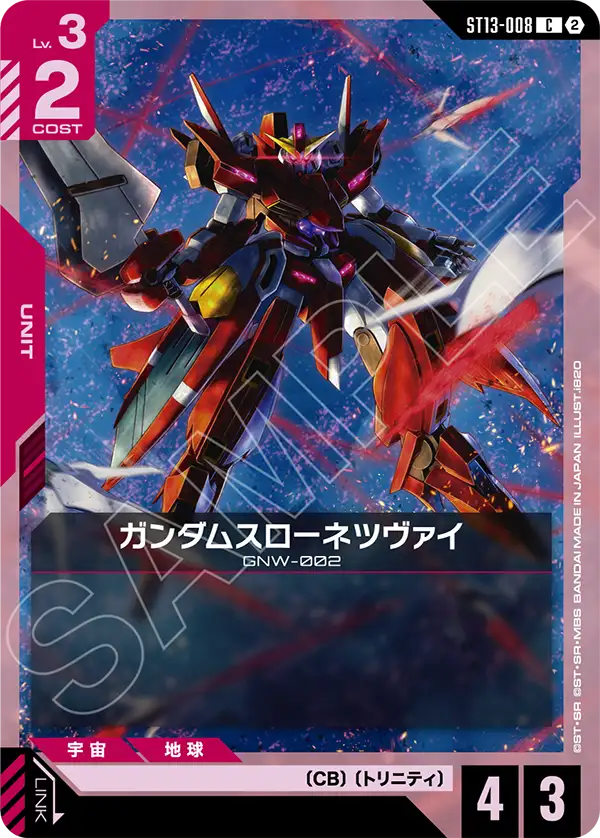
数え方
採用率は、8/1〜11/2のニュータイプチャレンジ 2026 MISSION4・MISSION5とシリアルカードチャレンジ（9月・10月）の入賞デッキのうち、デッキカラーが赤/紫の204本を母数にしています。「珍」は赤/紫での採用率が10%未満のカードです。5.5弾（ST11〜14）のカードは10/3から大会に出てくるので、期間全体で数えた採用率は低めに出ます。デッキリストが公開されていない入賞デッキは数に入れていません。数字は公式の大会結果から自動で集めた集計です。誤りに気づいたらXアカウント（@gcg_stats）のDMで教えてください。